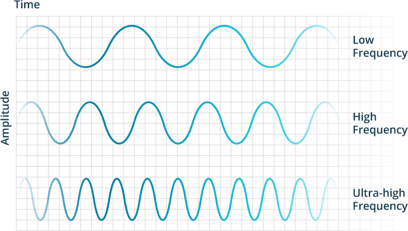

3 ways to use Uncertainty to your Advantage

Thousands of years ago, Once the Buddha achieved his enlightenment and started teaching to the public , one of his first messages was :
"There is Suffering"
This simple statement forms the crux of all Buddhist traditions.
"There is Suffering"
Understanding of this "Suffering" is not meant to put one into despair or sorrow , but rather it is truth (and a powerful truth at that) which indicates that everything is eternally changing. The whole cosmos is in constant flux. This flux gives rise to Uncertainty, Transientness and Impermanence (Anicca).
As we look around us , every single thing we regard as tangible, concrete and real is nothing but clumps of matter , shaped and made into different , sizes and forms, the wooden furniture was once a living tree which was once a seed in the ground. particles accumulate and de-accumulate to give rise to the diversity of forms percieved in the physical world.
Our very bodies change each and every day and each and every minute, the processes of breathing, digestion , heartbeat and circulation go on beneath our level of consciousness.
But Dukkha(suffering) caused by Anicca(Uncertainty/Impermanence) are not depressive and nihilistic philosophies as one might think. In fact it's quite the opposite , it is resisting change can lead us to depression and stress and gloom in the long run.
Understanding and applying the knowledge of Anicca can lead to a more stress free and overall efficient daily life.
1: Being aware of change helps cope with (and even enjoy) routine
I tend to feel a large part of the reason why we feel so bored as a species , and constantly look for some form of stimuli or another whether, physical , emotional or intellectual is because we have become numb to the eternal changes happening around us.
The Truth is no single moment is the same as the next.
When we start awakening to this truth , each moment is truly special. We start exploring the world through the eyes of innocence. Start questioning every deeply held belief , no matter how sacred, and take nothing for granted. Even our questioning is not directed towards a conclusion , as both the questioner and questioned are constantly in flux.
From this context , there is no such thing as a monotonous routine, even if you have a "typical" job , a "typical" home ,and "typical" family ,every day of your life may appear "similar" but no two moments are the same.
How accurately we perceive change and reality determines our frequency of vibration.
2: Being aware of change enables greater groundedness
One of my recent favourite anecdotal exchanges between Bodhidharma , the originator of Zen and his disciples:
Bodhidharma asked, "Can each of you say something to demonstrate your understanding?"
Dao Fu stepped forward and said, "It is not bound by words and phrases, nor is it separate from words and phrases. This is the function of the Tao."
Bodhidharma: "You have attained my skin."
The nun Zong Chi stepped up and said, "It is like a glorious glimpse of the realm of Akshobhya Buddha. Seen once, it need not be seen again."
Bodhidharma; "You have attained my flesh."
Dao Yu said, "The four elements are all empty. The five skandhas are without actual existence. Not a single dharma can be grasped."
Bodhidharma: "You have attained my bones."
Finally, Huike came forth, bowed deeply in silence and stood up straight.
Bodhidharma said, "You have attained my marrow."
This unnamed , ungraspable , imperceptible , unimaginable and eternally mysterious emptiness around which the dance of the cosmos happens is Shunya.
The mind has a tendency to immediately attach labels to things and experiences.But in order to have a deeper understanding we must empty our cup.
3: Acknowledging change makes us more compassionate
Accepting that none of us will be hanging around forever motivates us to be kinder and more compassionate to our fellow beings who are perhaps also going through rough changes of their own
This compassion is referred to as karuna in the Buddhist tradition.
This Karuna again enhances the clarity with which we perceive the world which again leads to more compassion which leads to greater awareness , which leads to more compassion... you get the drift , (or do you?)
This virtuous cycle can help us see , relate with and love people the way they are , without necessary imposing our conditions/expectations on them.
Thanks for taking the time out to read this ,and hope you can apply these principles to engage with change and go with the flow rather than resisting or running away.